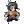

| - | Character | Speed | - | - | Score | - |
|---|---|---|---|---|---|---|
|  | Aria | 10:03.67 | 131st | 3876 | 1394th | |
| Bard | 4:08.41 | 87th | 18060 | 162nd | ||
| Bolt | 5:07.42 | 91st | 3772 | 336th | ||
| Cadence | 8:02.43 | 251st | 7294 | 2717th | ||
| Diamond | 5:34.90 | 85th | 5275 | 1199th | ||
| Dorian | 4:17.52 | 51st | 2839 | 890th | ||
| Dove | 3:29.19 | 81st | - | - | ||
| Eli | 8:22.68 | 71st | 3010 | 2003rd | ||
| Mary | 13:17.00 | 206th | 2802 | 1503rd | ||
| Melody | 6:20.27 | 78th | - | - | ||
| Monk | - | - | 2632 | 2959th | ||
| Nocturna | 10:27.22 | 222nd | 16562 | 238th | ||
| Tempo | 5:14.84 | 71st | 4241 | 1351st | ||
| Coda | - | - | 241 | 254th | ||
| Story | - | - | 31201 | 43rd | ||
| 9char | - | - | 24434 | 163rd | ||
| 13char | - | - | - | - |
| Speed | ||||||||||||||
| Hard | - | 6:37.2415th | - | - | 16:16.0435th | - | - | 19:00.2622nd | - | - | - | 19:41.36157th | - | - |
| NR | - | 6:56.2322nd | - | 14:58.4197th | 10:22.8324th | - | 4:56.7222nd | - | - | - | - | - | - | - |
| Rando | - | 7:23.0430th | 8:48.0825th | - | - | 8:10.3522nd | - | 18:30.7628th | - | - | - | 14:47.3144th | - | - |
| Phasing | 10:40.9223rd | 3:26.8012th | 6:21.3320th | 8:46.1637th | 6:51.2240th | 7:52.2721st | 3:29.2655th | 6:09.8714th | - | 6:04.9625th | - | 12:56.8548th | 6:26.5223rd | - |
| Mystery | - | 11:57.5542nd | - | - | - | - | - | 15:47.2913th | - | - | - | - | - | - |
| Low | - | - | - | - | - | - | - | - | - | - | - | - | - | - |
| Speed | |||
| Low | - | - | - |
| Score | ||||||||||||||
| Hard | 18645th | 4566682nd | 255146th | - | 2199170th | - | 31194th | 454222nd | - | 1451386th | - | 1562621st | 1836128th | 652nd |
| NR | 5315th | 3173493rd | 29107th | 35621032nd | 1692100th | 28735th | 10584th | - | - | - | - | - | - | - |
| Rando | 582nd | 33312098th | 298371st | - | 185744th | 288525th | 22093rd | 250990th | - | - | - | 48871465th | 380129th | - |
| Phasing | 344018th | 28381391st | 134483rd | 33251026th | 483127th | 123436th | 87436th | 2274105th | 228431st | 419999th | 1278116th | 14001131st | 292238th | 33284th |
| Mystery | - | 3691600th | 68177th | - | - | - | 12384th | 447614th | - | - | - | - | - | - |
| Deathless | 0-4-1158th | 7-1-187th | 0-4-1117th | - | 1-2-167th | 0-3-366th | 0-2-1113th | 1-4-346th | 0-1-487th | 2-2-284th | 0-3-386th | - | 0-3-182nd | 0-1-358th |
Last Updated:2022/07/04 16:16